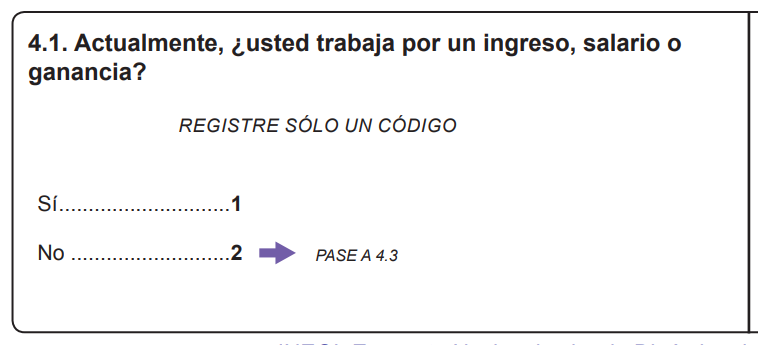
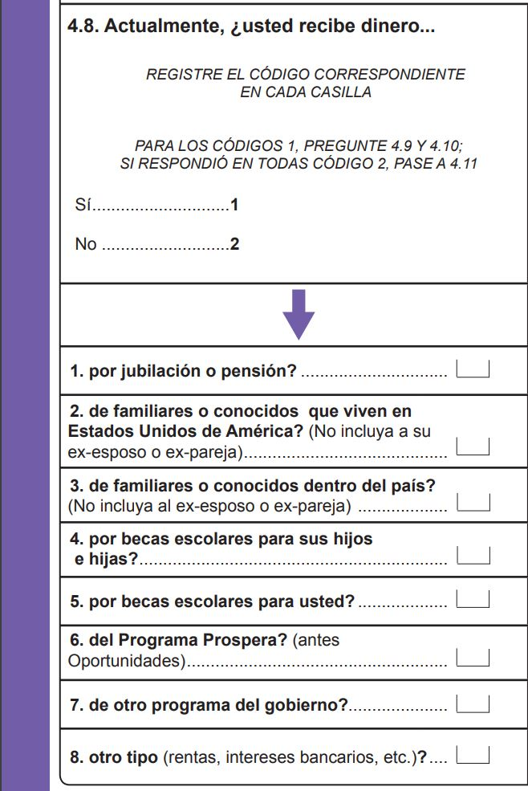
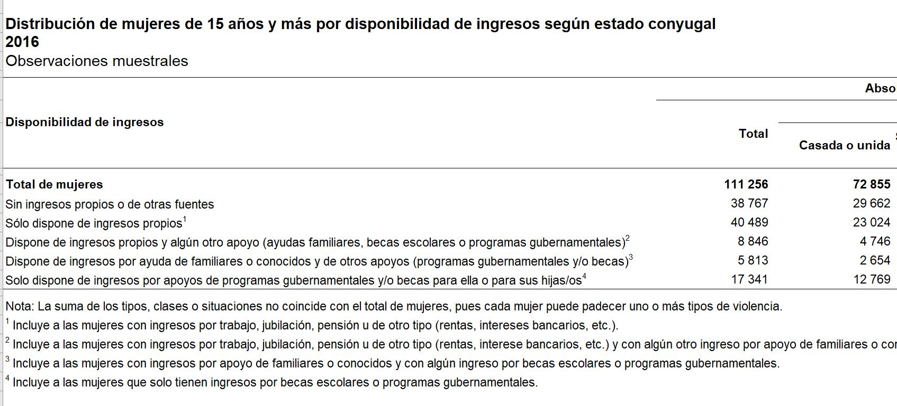

Curaduría Datos Abiertos INEGI
ENDIREH Sección 4
ENDIREH
Encuesta Nacional sobre la Dinámica de las Relaciones en los Hogares 2016 Tres cuestionarios distintos con 19 secciones, entre ellas: vivienda, situación de la relación de pareja, vionecia en ámbito estoclar, laboral, comunitario, atención obstétrica, familiar.
De Sección 4 recursos
Pregunta 1 y pregunta 8.


Resulta una sola variable con 5 valores posibles de acuerdo a los tabulados básicos

Este artículo está licenciado bajo Creative Commons Attribution 3.0 License